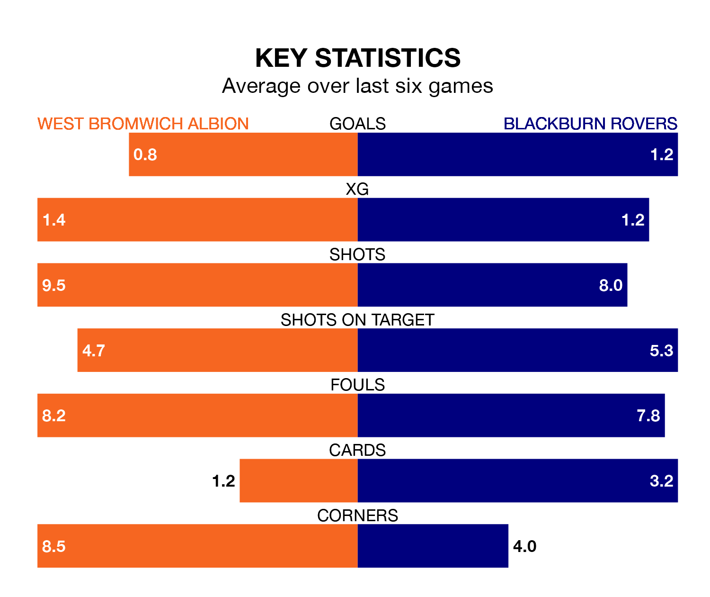

Blackburn Rovers travel to the Hawthorns looking to secure a first win in six Championship games against West Bromwich Albion on Saturday.
Blackburn have lost four and drawn one matches since they last earned three points – against Bristol City on December 12.
They face a West Bromwich side who have won two and drawn one over that time.
In Samuel Szmodics, Blackburn have the league's sharpest shooter so far this season. He has notched 16 goals in 25 appearances.
His goal rate of one every 138 minutes is quicker than that of Brandon Thomas-Asante, West Bromwich's top scorer with a goal every 269 minutes, and a total of seven goals in 24 games.
In the last 10 years, West Bromwich and Blackburn have played each other on nine occasions. West Bromwich won two of them, Blackburn three, and they drew four times.
On average, the Baggies scored 1.2 goals and Blackburn 1.3 in those matches.
Their last meeting was on August 5, when Blackburn won 2-1 at home.
With 39 goals in 26 games so far this season, Rovers are scoring more than average in the league with 1.5 goals per game. But they are conceding more than average too, letting in 48 goals at a rate of 1.8 per game.
Albion, meanwhile, are average scorers, with 1.4 goals per game. They have conceded 0.9 goals per game.
The Baggies are fifth in the table after 26 games, of which they have won 12 and drawn six, earning 42 points.
The visitors are 12 places behind the home team in 17th, with 10 wins and two draws putting them on 32 points.
West Bromwich's last match was on January 1, a 1-0 loss against Swansea City.
Blackburn drew 2-2 with Rotherham United last time out, also on January 1, with Arnór Sigurdsson and Szmodics on the scoresheet.
Updated: 11:29, 08/01/24